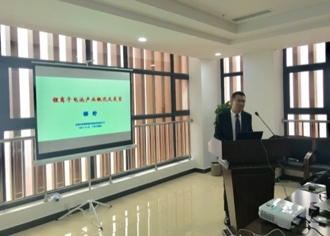
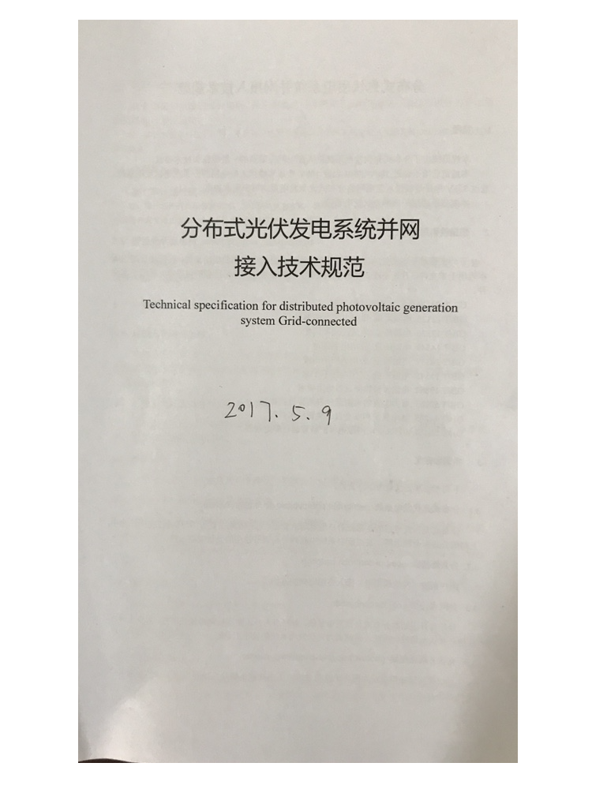

研究院成功举办2017年乐山市新能源利用与产业化发展培训班
2017年12月22日，为推动新能源技术的普及和产业发展，由乐山市科技局、乐山职业技术学院主办、乐山太阳能研究院承办的“2017年乐山市新能源利用与产业化发展培训班”成功在乐山职业技术学院学术交流中心举办，来自政府部门、农村科技部门、高校和企业的共计80余名学员参加了此次培训班。
本次培训班邀请了四川省“千人计划”专家梁奇博士、姜希猛博士等8名行业内知名或具有丰富实践经验的专家进行了授课。培训班由崔明现博士主持，乐山太阳能研究院院长姜希猛博士、乐山市科技局社发科科长潘俊长出席并致欢迎辞。培训内容包括动力电池及电动汽车技术与产业发展、燃料电池与废弃物制氢、光伏产业发展现状与趋势、多晶硅技术与产业、光伏电站运维、光伏建筑一体化实践等各种新能源技术与产业。培训结束后，学员还参观了乐山职业技术学院10 kW屋顶示范光伏电站、多晶硅制备厂房、太阳电池及组件制备及检测实验实训室。
乐山太阳能研究院在光伏发电技术等领域具备深厚的技术积累，本次培训班的举办不但促进了学员对于新能源技术及产业的了解，更提升了研究院在行业内的影响力。

关于举办2017年乐山市新能源利用与产业化发展培训班的通知
各县（市、区）科技部门，各高校和职业学校、科研院所、企事业单位：
按四川省科技培训计划项目要求，为促进新能源技术的应用与推广，提升科技管理人员和农村科技人员技术水平，由乐山市科技局、乐山职业技术学院主办，乐山太阳能研究院承办的“2017年乐山市新能源利用与产业化发展培训班”定于2017年12月22日（周五）在乐山职业技术学院举办，现将有关事项通知如下：
一、培训内容
（一） 光伏产业发展现状与趋势
（二） 光伏发电技术与应用
（三） 农村太阳能光伏能源应用
（四） 新能源汽车
（五） 参观考察：屋顶光伏电站
二、培训对象
国内从事新能源开发利用和产业化相关的政府部门、企事业单位、高等学校、职业学校、科研院所等部门的科技管理人员、农村科技人员，共80-100人。
三、时间地点
（一） 报到时间：2017年12月22日9:30-9:50
（二） 培训时间：2017年12月22日9:50-17:00（周五）
（三） 培训地点：乐山职业技术学院新校园学术交流中心
四、注意事项
（一） 本期培训不向学员收取任何费用，包食宿。交通费由学员自理。外地学员需住宿的请在回执上注明。
（二） 请各部门（单位）尽快确定参训人员，并于12月20日前用微信扫描附件二维码报名（推荐），或将报名回执发送到cuimingxian@gmail.com或QQ：4823422。
（三） 参训学员可携带《四川省专业技术人员继续教育登记证书》，研修课程经考核合格作为继续教育专业科目记入登记证。
（四） 交通导航：
（1）乐山高铁站、乐山客运站：乘坐22路公交车在乐山八中站下车，到街对面转乘9路公交车到达乐山职业技术学院新校区；
（2）自驾车可在高速路乐山出口下，直接导航：乐山职业技术学院新校区（青衣江大道中段1336号）。
五、联系方式
联系人：崔明现 博士
手 机：15298092023 QQ：4823422
邮 箱：cuimingxian@gmail.com
乐山市科学技术局
乐山职业技术学院
乐山太阳能研究院
2017年12月8日
附件1：参会回执
| 姓名 | 单位 | 职务 | 手机 | 住宿时间 |
|---|---|---|---|---|
注：请于12月20日前将回执信息发送到cuimingxian@gmail.com或QQ:4823422，以便会务组安排住宿等事宜，感谢配合！
或用微信扫描以下二维码报名（推荐）：

姜希猛博士一行调研恩平燕怡新材料有限公司
2017年11月6-7日，研究院姜希猛博士、崔明现博士、胡小冬副教授等一行赴广东恩平燕怡新材料公司进行调研并洽谈项目合作。双方就纳米碳酸钙技术和产业、气凝胶技术应用等进行了交流，双方计划在气凝胶在纳米碳酸钙及涂料中的应用开展合作研究。
恩平燕怡新材料有限公司是国内最早从事纳米碳酸钙生产的企业、中国纳米碳酸钙产业基地，主要生产塑料、橡胶、涂料、油墨等专用纳米碳酸钙。
我院参加东沙湖杯“第6届千人计划创新创业大赛”复赛
2017年9月8日，我院携“低成本透明隔热气凝胶纳米材料”项目参加了在成都人才之家举行的东沙湖杯第6届千人计划创新创业大赛华西片区的复赛，崔明现博士代表创新团队参加了本次大赛。
图/文：崔明现
2017-9-4
我院参加第二届中国军民两用技术创新应用大赛半决赛
2017年8月22-24日，我院携“低成本透明隔热气凝胶纳米材料”项目参加了在江西赣州举行的“第二届中国军民两用技术创新应用大赛半决赛”，姜希猛博士、崔明现博士、胡小冬为代表的创新团队参加了半决赛。

图/文：崔明现
2017-8-24
我院气凝胶项目进入军民两用技术创新大赛半决赛
我院气凝胶项目参加了“第二届中国军民两用技术创新大赛”，并入选半决赛。半决赛将于8月22-23日在江苏赣州进行。
8月7日下午，崔明现博士参加了在成都菱彩酒店举办的半决赛辅导会（成都站）。
2017-8-7
崔明现
我院参加清华四川能源互联网研究院成果对接会
2017年5月19日，清华四川能源互联网研究院成果发布对接会在成都天府新区菁蓉中心举行，我院崔明现博士参加了此次对接会，就新能源新材料相关技术进行了交流。
本次会议是由清华大学科研院、四川省科技厅、四川省人才办共同主办，清华四川能源互联网研究院、国家技术转移西南中心、四川省高端人才服务中心、西南科技大学共同承办。
本次成果发布对接会展示了清华四川能源互联网研究院在能源、环境方面的多项成果，举办新能源汽车、能源环境等3个主题论坛。
研究院召开分布式光伏发电系统接入技术规范第二次标准讨论会
2017年5月9日下午，研究院在院会议室召开了四川省地方标准《分布式光伏发电系统接入技术规范》第二次标准讨论会。研究院院长姜希猛博士、崔明现博士、胡小冬，乐山职业技术学院何帆，乐山新天源太阳能电力冯加宝经理等参加了此次讨论会。
此次讨论会对上次的标准草案修改内容进行了确认，并对系统一次、接入方案部分提出了新的建议。
讨论会计划在下周五组织行业专家召开光伏接入标准研讨会。

文：乐山太阳能研究院
姜博士参加省千人联谊会自贡行
2017年5月3日，乐山太阳能研究院院长姜希猛博士、崔明现博士、胡小冬等一行参加了四川省千人计划专家联谊会组织的“自贡行”活动。
活动上午考察了自贡市安益生物、中天胜新材料等公司。下午，姜博士参加了自贡市组织的项目与人才对接活动并致辞，与华西能源等多家企业进行了项目对接交流。
图/文：乐山太阳能研究院
2017-5-3